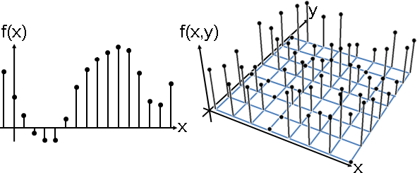
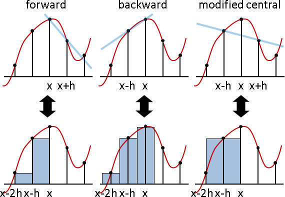
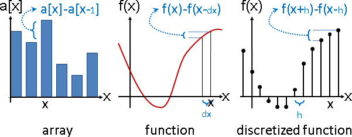

Numerical Computation / Symbolic Computation
算術當中，採用實際數值，稱作「數值計算」。採用數學符號，稱作「符號計算」。
例如整數除法：
Numerical Computation:
1 ÷ 3 = 0.3333333333333 （使用數字，記下答案。無法完全記錄。）
Symbolic Computation:
1
1 ÷ 3 = ——— （使用數學符號：一條橫槓，代表分數，記下答案。）
3
例如多項式乘法：
Numerical Computation:
x = 2, y = 1
(x+1)(3y+2) = (2+1)×(3×1+2) = 3×(3×1+2) = 3×(3+2) = 3×5 = 15
Symbolic Computation:
(x+1)(3y+2) = 3xy + 2x + 3y + 2
小學談數值計算，中學談符號計算，大家應該非常熟悉。
Function資料結構
函數有兩種記載方式：符號記載、數值記載。
f(x) = x² + 2x + 1 | f(x) = { 2x if x > 0 | f(0.01) = 0.02
| { -x otherwise | f(0.02) = 0.05
| | : :
symbolic notation | symbolic notation | numerical notation
採用符號記載，函數可以輕易寫成程式碼、寫成函式。
採用數值記載，函數必須取樣、擇鄰。
有兩種常見方式：
一、固定距離取樣，形成正方形網格、正方體網格。
二、隨機取樣，然後連接成三角形網格、四面體網格。

f[{x_, y_}] = Sin[x * y] * Cos[x + y];
p = Flatten[Table[{i, j}, {i, -3, 3, 0.8}, {j, -3, 3, 0.8}], 1];
q = Transpose[{p[[All,1]], p[[All,2]], N[Map[f, p]]}];
g1 = ListPointPlot3D[q, PlotStyle -> {PointSize[Large], Black}, Filling -> Bottom, FillingStyle -> Thick, Boxed -> False, Axes -> False];
m = DelaunayMesh[p];
g2 = MeshRegion[q, MeshCells[m, 1], MeshCellStyle -> {{1, All} -> {Black, Thick, Opacity[0.5]}, {0, All} -> None}];
Show[g2, g1]
Function格式轉換
符號轉數值：求值。數值轉符號：內插、迴歸。
符號轉數值，計算學家稱作「離散化Discretization」，數學家稱作「有限元素法Finite Element Method」。
數值轉符號，目前沒人討論。
函數運算
四種組合：
一、給定數值記載、求得數值記載：請參考本篇文章。
二、給定數值記載、求得符號記載：我沒見過。
三、給定符號記載、求得數值記載：請參考本站文件「Function」。
四、給定符號記載、求得符號記載：很困難，我沒學過。
微分、積分
函數離散化之後，函數運算產生變化。加減乘除模大同小異，不再贅述。複合運算錯綜複雜，姑且略過。微分運算、積分運算則有許多種設定方式，以固定距離取樣為例：
1st-order derivative on grid (finite difference)
forward [f(x+h) - f(x)] / h
backward [f(x) - f(x-h)] / h
central [f(x+h/2) - f(x-h/2)] / h (cannot be used)
central [f(x+h) - f(x-h)] / 2h (modified)
2nd-order derivative on grid
forward [f(x+2h) - 2f(x+h) + f(x)] / h²
backward [f(x) - 2f(x-h) + f(x-2h)] / h²
central [f(x+h) - 2f(x) + f(x-h)] / h²
1st-order integral on grid (finite volume)
forward(?) [f(x-h) + f(x-2h) + ...] * h
backward(?) [f(x) + f(x-h) + ...] * h
central(?) [f(x-h/2) + f(x-3h/2) + ...] * h (cannot be used)
central(?) [f(x-h) + f(x-3h) + ...] * 2h (modified)

公式是以泰勒展開式推導而得，捨去後續項次。當取樣間隔小於1、接近0，後續項次迅速縮小，幾乎不會造成影響。
大家傾向採用中央版本。優點是數值不會位移，缺點是微分兩次不會得到二次微分。
f(x + h) = f(x) / 0! + f'(x) h / 1! + f"(x) h² / 2! + ...
f(x - h) = f(x) / 0! - f'(x) h / 1! + f"(x) h² / 2! - ...
1sx-order central derivative
f(x + h) - f(x - h) = 2 f'(x) h + ... ≈ 2 f'(x) h
f'(x) ≈ [f(x + h) - f(x - h)] / 2 / h
2nd-order central derivative
f(x + h) + f(x - h) = 2 f(x) + f"(x) h² + ... ≈ 2 f(x) + f"(x) h²
f"(x) ≈ [f(x + h) + f(x - h) - 2 f(x)] / h²
陣列、函數、函數離散化，三者不盡相同。舉例來說，陣列微分是a[x] - a[x-1]，函數微分是[f(x) - f(x-dx)] / dx，函數離散化的微分是[f(x+h) - f(x-h)] / 2h。

梯度、散度、旋度
梯度反元素【尚無正式名稱】
向量場，求梯度反元素，得純量場。
梯度反元素不一定存在。向量場不含旋場（旋度是零，不含樓梯幻覺），才存在梯度反元素。
梯度偽反元素【尚無正式名稱】
當向量場含有旋場，改為找平方誤差最小、又擁有梯度反元素（不含旋場）的向量場。
正是散旋諧分解的散場。
given F, find G = grad(g)
min sum (Fijx - Gijx)² + (Fijy - Gijy)²
{ -2(Fijx - Gijx) = 0
{ -2(Fijy - Gijy) = 0
「一次微分等於零」的地方是極值、鞍點。對每一處的XY兩個方向分別微分，使之為零。其中一種可能性是Poisson Equation？
散旋諧分解
散旋諧分解，散場、諧場可以求梯度反元素，從向量場變純量場，減少儲存空間。二維的情況下，旋場也可以這樣做。
向量場求散度，解Poisson，得散勢；再求梯度得散場。向量場求旋度，三個值分別解Poisson得旋勢，再求旋度得旋場。向量場減散場、減旋場、得諧場。
二維的情況下，旋場較好算。向量場求旋度，一個值解Poisson得旋勢，再求梯度、轉90度、取負數、得旋場。
解線性方程組，大家習慣使用「Preconditioner」。偷懶的方式是實施足夠次數。
延伸閱讀：複數
把XY改成實虛。
Schrödinger's Smoke
http://www.its.caltech.edu/~achern/projects/SchrodingersSmoke/
看來看去好像還是沒看懂。